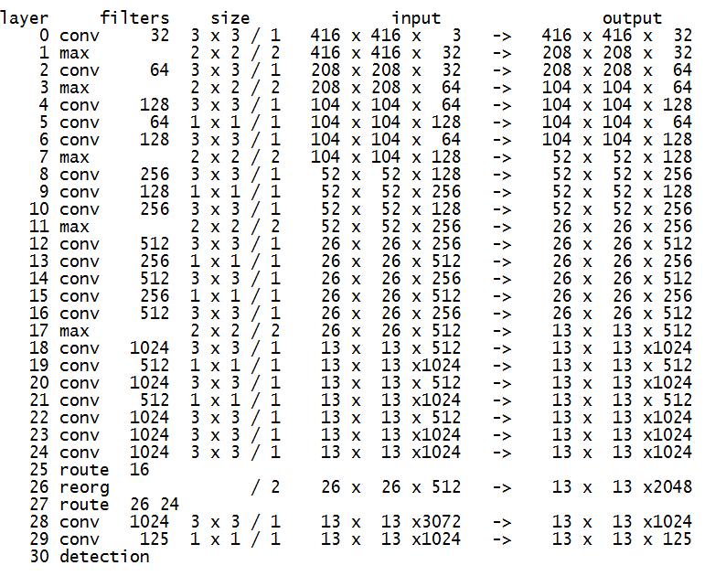
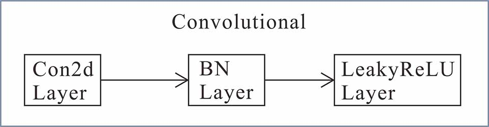
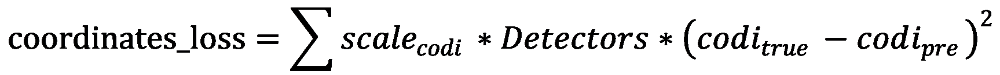
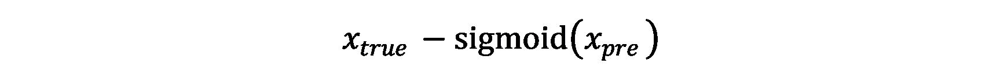
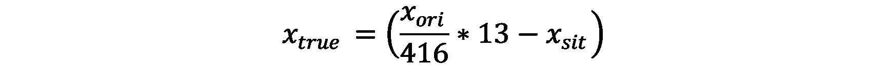
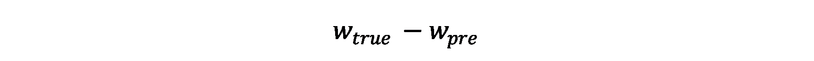
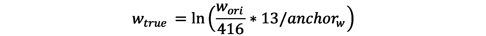
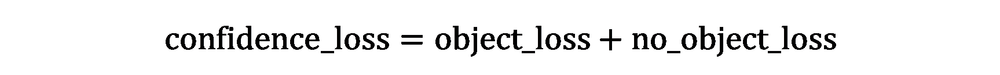
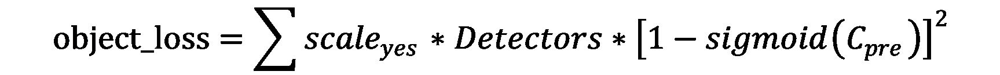

目标检测: YOLOv2笔记
一. YOLOv2基础模型—Darknet19
Darknet-19主要参考VGG16模型，主要采用3*3卷积，以及2*2的最大池化层，在特征图维度的降低一倍的同时增加一倍特征图的通道数。另外引入NIN（Network in Network）思想，添加1x1卷积层，另外使用batch_norm正则层加快收敛速度，减少过拟合程度。添加跨层跳跃连接（借鉴ResNet等思想），融合粗细粒度的特征。
图1.darknet-19模型图
共包含22个卷积模块、5个最大池化层、1个拼接层以及1个Reorg层,其中卷积模块conv为conv+BN+Leaky，卷积核只使用3x3和1x1
A.卷积模块(conv)
图2.卷积模块模型图
B.最大池化(max)

图3.最大池化原理图
C.拼接层(route)
图4.拼接原理图
D.reorg层
图6.reorg原理图
E.Darknet-19卷积网络输出(output)
网络输出结果的理解：13*13*(5*25)长方体特征图
图7.输出长方体特征图
二. YOLOv2的损失与优化
A.损失器
首先是损失器一图流，看似很复杂，憋急，一步步分析，损失器一共包括三个部分，分类的损失(class_loss)、位置参数的损失(coordinates_loss)以及置信度损失(confidence_loss)
图8.损失公式
1.分类的损失计算
scale_class为分类损失调节系数
Detectors为判别器A：
判断真实object是否在这一网格（i, j）的boxes(k)中，假如存在真实object，则值取1，不存在则取0
class_true为类别真实值的One_hot化编码
class_pre卷积网络输出的值，经过softmax转换后参加损失器计算
2.位置参数的损失计算

scale_codi为位置损失调节系数
Detectors为判别器A：
判断真实object是否在这一网格（i, j）的boxes(k)中，假如存在真实object，则值取1，不存在则取0
codi_true和codi_pre分别为位置(x,y,w,h)的真实值和卷积网络输出值，两者又分为(x,y)和(w,h)两组，计算略有差别。
I. xy系列(以x坐标举例)
x_pre为卷积网络输出x值，经由sigmoid转换至成[0, 1]

x_true为相对所在网格的坐标
x_ori为相对整张图片(416*416)的坐标
x_sit为网格所在编号
II. wh系列(以w坐标举例)
 
w_true为相对锚箱宽度的对数
w_ori为相对整张图片(416*416)的宽度
anchor_w为锚箱的宽度比例
3.置信度的损失计算
自信度损失计算包括两部分，包含物体所在box的损失，以及不包含物体所在box的损失
I. Object_loss

scale_yes为包含物体的损失调节系数
Detectors为判别器A：
判断真实object是否在这一网格（i, j）的boxes(k)中，假如存在真实object，则值取1，不存在则取0
置信度C_pre取值范围为[0,1]，所以要对卷积网络输出值进行sigmoid转换
假如物体在这一网格，这一box中，则真实置信度C=1
假如物体不在这一网格，这一box中，则真实置信度C=0
II. No_object_loss
scale_yes为不包含物体的损失调节系数
Detectors为判别器A：
判断真实object是否在这一网格（i, j）的boxes(k)中，假如存在真实object，则值取1，不存在则取0
Object_detection为判别器B：
判断真实object位置(x,y,w,h)与预测object位置(x,y,w,h)之间的交并比是否到达阈值
假如交并比(IoU)大于阈值则判别器取1，小于阈值则判别器取0
置信度C_pre取值范围为[0,1]，所以要对卷积网络输出值进行sigmoid转换
假如物体在这一网格，这一box中，则真实置信度C=1
假如物体不在这一网格，这一box中，则真实置信度C=0
B.优化
Adam:(adaptive moment estimation)自适应矩估计下降算法
batch_size=8 or 32
learning_rate=0.1
三. 实现过程
A.编写Darknet-19模型
B.Loss的实现
Yolo的损失器并不是简单MSE，而是由几个不同部分损失拼接起来，因此将其写成一个tensor层更为方便。
Loss层输入参数：
→Darknet-19网络输出的结果13*13*(5*25)长方体 [pre]
→图片中M个真实目标参数表M*5（导入计算IoU）[true]
→Detectors判别器 13*13*5*1 [true]
→结构化的真实目标参数表 13*13*5*5 [true]
→锚箱盒 5*2 （5组锚箱）
→分类数目N
KERAS下实现技巧:
model = Model([model_body.input, y_true], model_loss)
model.compile(optimizer='adam', loss={'yolo_loss': lambda y_true, y_pred: y_pred})
将目标当成一个输入，构成多输入模型，把loss写成一个层，作为最后的输出，搭建模型的时候，就只需要将模型的output定义为loss，而compile的时候，直接将loss设置为y_pred（因为模型的输出就是loss，所以y_pred就是loss）
C.训练
1.图片预处理
2.Box预处理
3.运行带loss层的模型
4.模型保存
D.预测
1.图片预处理
2.运行Darknet19基础模型
3.输出结果解析转换
4.非最大化抑制
5.数据输出
参考文献
[0] 源代码; 同YAD2K
[1] YAD2K: Yet Another Darknet 2 Keras; https://github.com/allanzelener/YAD2K
[2] YOLO9000: Better, Faster, Stronger; https://arxiv.org/abs/1612.08242
[3] YOLO: Real-Time Object Detection; https://pjreddie.com/darknet/yolov2/
[4] 目标检测之YOLOv2，最详细的代码解析; https://www.jianshu.com/p/032b1eecb335
[5] 深入理解目标检测与YOLO(从v1到v3); https://blog.csdn.net/qq_39521554/article/details/80694512